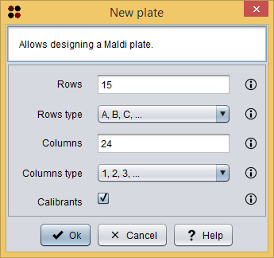

This operation allows you to create a new Maldi plate.
Usage
You can execute this operation by clicking the menu option File/New plate.
A dialog will appear allowing you to specify the new Maldi plate design. As you can see in the following image, this dialog requires you to provide the following information:

New plate dialog
After clicking the Ok button, a new Maldi plate datatype is added to the clipboard and automatically opened in the Maldi plate editor.